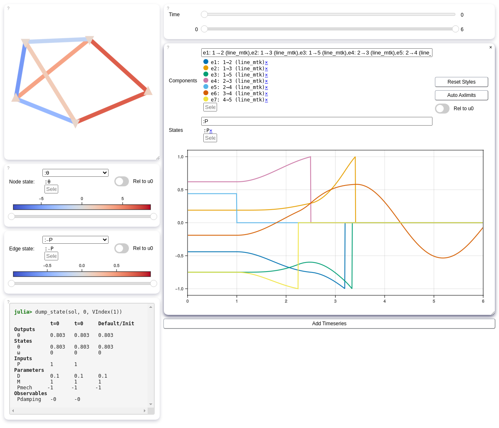
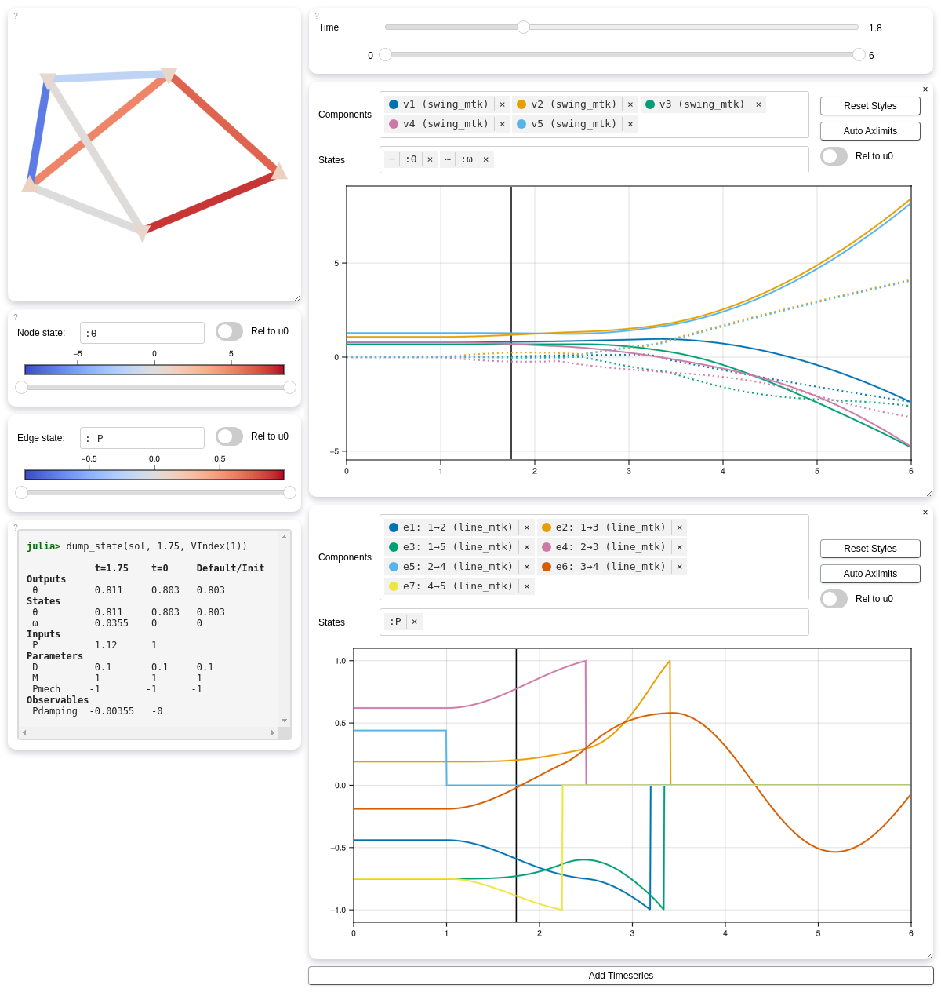

Interactive Solution Inspection
An interactive solution inspection tool based on WGLMakie and Bonito is provided through the helper package NetworkDynamicsInspector.
First, we need to define the system we want to inspect.
Define some network, simulate it and get a solution object
using NetworkDynamics
using NetworkDynamicsInspector
using OrdinaryDiffEqTsit5
using Graphs
include(joinpath(pkgdir(NetworkDynamics), "test", "ComponentLibrary.jl"))
function get_sol(;limit=1.0)
g = SimpleGraph([0 1 1 0 1;
1 0 1 1 0;
1 1 0 1 0;
0 1 1 0 1;
1 0 0 1 0])
vs = [Lib.swing_mtk() for _ in 1:5];
set_default!(vs[1], :Pmech, -1)
set_default!(vs[2], :Pmech, 1.5)
set_default!(vs[3], :Pmech, -1)
set_default!(vs[4], :Pmech, -1)
set_default!(vs[5], :Pmech, 1.5)
ls = [Lib.line_mtk() for _ in 1:7];
nw = Network(g, vs, ls)
sinit = NWState(nw)
s0 = find_fixpoint(nw)
set_defaults!(nw, s0)
# set_position!(vs[1], (0.0, 0.0))
set_marker!(vs[1], :dtriangle)
set_marker!(vs[2], :utriangle)
set_marker!(vs[3], :dtriangle)
set_marker!(vs[4], :dtriangle)
set_marker!(vs[5], :utriangle)
cond = ComponentCondition([:P, :₋P, :srcθ], [:limit, :K]) do u, p, t
abs(u[:P]) - p[:limit]
end
affect = ComponentAffect([],[:active]) do u, p, ctx
@info "Trip line $(ctx.eidx) between $(ctx.src) and $(ctx.dst) at t=$(ctx.t)"
p[:active] = 0
end
cb = ContinousComponentCallback(cond, affect)
set_callback!.(ls, Ref(cb))
tripfirst = PresetTimeComponentCallback(1.0, affect) # reuse the same affect
add_callback!(nw[EIndex(5)], tripfirst)
nwcb = NetworkDynamics.get_callbacks(nw);
s0 = NWState(nw)
s0.p.e[:, :limit] .= limit
prob = ODEProblem(nw, uflat(s0), (0,6), copy(pflat(s0)), callback=nwcb)
sol = solve(prob, Tsit5())
end
sol = get_sol()[ Info: Trip line 5 between 2 and 4 at t=1.0
[ Info: Trip line 7 between 4 and 5 at t=2.2476763961108466
[ Info: Trip line 4 between 2 and 3 at t=2.5025231919919295
[ Info: Trip line 1 between 1 and 2 at t=3.1947647110612936
[ Info: Trip line 3 between 1 and 5 at t=3.338052868169857
[ Info: Trip line 2 between 1 and 3 at t=3.4042696460061506Now that we have an ODESolution sol, we can call inspect to open the inspector GUI. The docstring provides several options to customize how the app is displayed.
inspect(sol; reset=true)[ Info: New GUI Session started
[ Info: Close existing session
[ Info: WS connection closed because of IO error
EOFError: read end of file
Stacktrace:
[1] (::Base.var"#wait_locked#832")(s::Sockets.TCPSocket, buf::IOBuffer, nb::Int64)
@ Base ./stream.jl:978
[2] unsafe_read(s::Sockets.TCPSocket, p::Ptr{UInt8}, nb::UInt64)
@ Base ./stream.jl:987
[3] unsafe_read(c::HTTP.Connections.Connection{Sockets.TCPSocket}, p::Ptr{UInt8}, n::UInt64)
@ HTTP.Connections ~/.julia/packages/HTTP/MIUdD/src/Connections.jl:203
[4] unsafe_read
@ ./io.jl:890 [inlined]
[5] unsafe_read(s::HTTP.Connections.Connection{Sockets.TCPSocket}, p::Base.RefValue{UInt16}, n::Int64)
@ Base ./io.jl:889
[6] read
@ ./io.jl:904 [inlined]
[7] readframe(io::HTTP.Connections.Connection{Sockets.TCPSocket}, ::Type{HTTP.WebSockets.Frame}, buffer::Vector{UInt8}, first_fragment_opcode::HTTP.WebSockets.OpCode)
@ HTTP.WebSockets ~/.julia/packages/HTTP/MIUdD/src/WebSockets.jl:129
[8] readframe(io::HTTP.Connections.Connection{Sockets.TCPSocket}, ::Type{HTTP.WebSockets.Frame}, buffer::Vector{UInt8})
@ HTTP.WebSockets ~/.julia/packages/HTTP/MIUdD/src/WebSockets.jl:128
[9] receive(ws::HTTP.WebSockets.WebSocket)
@ HTTP.WebSockets ~/.julia/packages/HTTP/MIUdD/src/WebSockets.jl:683
[10] safe_read(websocket::HTTP.WebSockets.WebSocket)
@ Bonito ~/.julia/packages/Bonito/PiA4w/src/connection/websocket-handler.jl:16
[11] run_connection_loop(session::Bonito.Session{Bonito.WebSocketConnection}, handler::Bonito.WebSocketHandler, websocket::HTTP.WebSockets.WebSocket)
@ Bonito ~/.julia/packages/Bonito/PiA4w/src/connection/websocket-handler.jl:93
[12] (::Bonito.WebSocketConnection)(context::@NamedTuple{routes::Bonito.HTTPServer.Routes, application::Bonito.HTTPServer.Server, request::HTTP.Messages.Request, match::String}, websocket::HTTP.WebSockets.WebSocket)
@ Bonito ~/.julia/packages/Bonito/PiA4w/src/connection/websocket.jl:45
[13] apply_handler(::Bonito.WebSocketConnection, ::@NamedTuple{routes::Bonito.HTTPServer.Routes, application::Bonito.HTTPServer.Server, request::HTTP.Messages.Request, match::String}, ::HTTP.WebSockets.WebSocket)
@ Bonito.HTTPServer ~/.julia/packages/Bonito/PiA4w/src/HTTPServer/implementation.jl:86
[14] delegate(routes::Bonito.HTTPServer.Routes, application::Bonito.HTTPServer.Server, request::HTTP.Messages.Request, args::HTTP.WebSockets.WebSocket)
@ Bonito.HTTPServer ~/.julia/packages/Bonito/PiA4w/src/HTTPServer/implementation.jl:158
[15] #21
@ ~/.julia/packages/Bonito/PiA4w/src/HTTPServer/implementation.jl:237 [inlined]
[16] upgrade(f::Bonito.HTTPServer.var"#21#23"{Bonito.HTTPServer.Server, HTTP.Streams.Stream{HTTP.Messages.Request, HTTP.Connections.Connection{Sockets.TCPSocket}}}, http::HTTP.Streams.Stream{HTTP.Messages.Request, HTTP.Connections.Connection{Sockets.TCPSocket}}; suppress_close_error::Bool, maxframesize::Int64, maxfragmentation::Int64, nagle::Bool, quickack::Bool, kw::@Kwargs{binary::Bool})
@ HTTP.WebSockets ~/.julia/packages/HTTP/MIUdD/src/WebSockets.jl:458
[17] upgrade
@ ~/.julia/packages/HTTP/MIUdD/src/WebSockets.jl:427 [inlined]
[18] stream_handler(application::Bonito.HTTPServer.Server, stream::HTTP.Streams.Stream{HTTP.Messages.Request, HTTP.Connections.Connection{Sockets.TCPSocket}})
@ Bonito.HTTPServer ~/.julia/packages/Bonito/PiA4w/src/HTTPServer/implementation.jl:236
[19] #invokelatest#2
@ ./essentials.jl:1055 [inlined]
[20] invokelatest
@ ./essentials.jl:1052 [inlined]
[21] (::Bonito.HTTPServer.var"#31#33"{Bonito.HTTPServer.Server})(stream::HTTP.Streams.Stream{HTTP.Messages.Request, HTTP.Connections.Connection{Sockets.TCPSocket}})
@ Bonito.HTTPServer ~/.julia/packages/Bonito/PiA4w/src/HTTPServer/implementation.jl:368
[22] #invokelatest#2
@ ./essentials.jl:1055 [inlined]
[23] invokelatest
@ ./essentials.jl:1052 [inlined]
[24] handle_connection(f::Function, c::HTTP.Connections.Connection{Sockets.TCPSocket}, listener::HTTP.Servers.Listener{Nothing, Sockets.TCPServer}, readtimeout::Int64, access_log::Nothing, verbose::Int64)
@ HTTP.Servers ~/.julia/packages/HTTP/MIUdD/src/Servers.jl:469
[25] (::HTTP.Servers.var"#16#17"{Bonito.HTTPServer.var"#31#33"{Bonito.HTTPServer.Server}, HTTP.Servers.Listener{Nothing, Sockets.TCPServer}, Set{HTTP.Connections.Connection}, Int64, Nothing, ReentrantLock, Int64, Base.Semaphore, HTTP.Connections.Connection{Sockets.TCPSocket}})()
@ HTTP.Servers ~/.julia/packages/HTTP/MIUdD/src/Servers.jl:401
Programmatic Access and GUI State Manipulation
Internally, the NetworkDynamicsInspector maintains a global reference to an AppState object. This AppState reflects changes made to the GUI by the user and can also be modified programmatically.
See the NetworkDynamicsInspector API for a complete list of available functions. A good starting point is the dump_app_state function, which helps you recreate a GUI state that was previously configured manually.
Let's say we've adjusted the AppState to include an additional time series plot for the node states.
We can dump the code which helps us to recreate the app state:
dump_app_state()# To recreate the current state, run the following commands:
set_sol!(sol) # optional if after inspect(sol)
set_state!(; t=1.75, tmin=0.0, tmax=6.0)
set_graphplot!(; nstate=[:θ], estate=[:₋P], nstate_rel=false, estate_rel=false, ncolorrange=(-8.428582f0, 8.428582f0), ecolorrange=(-0.98994404f0, 0.98994404f0))
define_timeseries!([
(; selcomp=[VIndex(1), VIndex(2), VIndex(3), VIndex(4), VIndex(5)], states=[:θ, :ω], rel=false),
(; selcomp=[EIndex(1), EIndex(2), EIndex(3), EIndex(4), EIndex(5), EIndex(6), EIndex(7)], states=[:P], rel=false),
])Now we can use this code to recreate the app state even though we've reseted it.
inspect(sol; reset=true)"copy-paste and execute code returned by `dump_app_state` here"